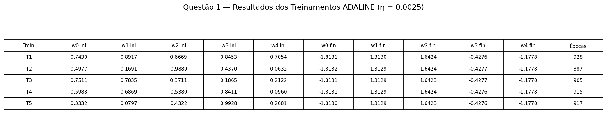
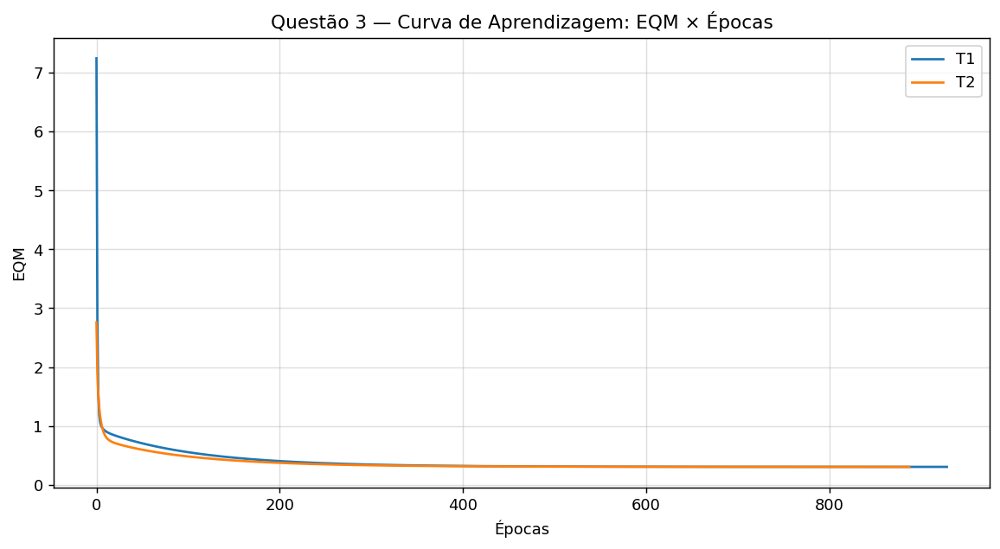
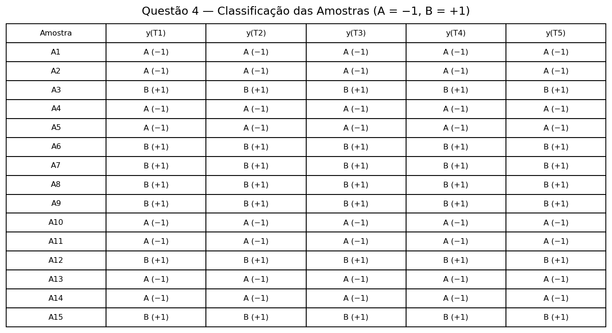
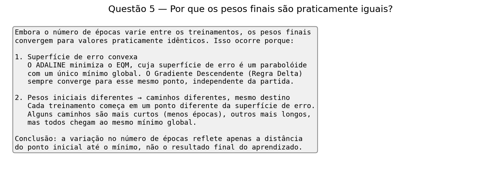

Configuração
Taxa de aprendizagem: .... Precisão: ....
Treinamentos
| Treinamento | Épocas | EQM final | Pesos finais |
|---|---|---|---|
Execute python3 adaline.py. | |||
Imagens geradas




Regra Delta, minimização de EQM e classificação com limiar.
Taxa de aprendizagem: .... Precisão: ....
| Treinamento | Épocas | EQM final | Pesos finais |
|---|---|---|---|
Execute python3 adaline.py. | |||



